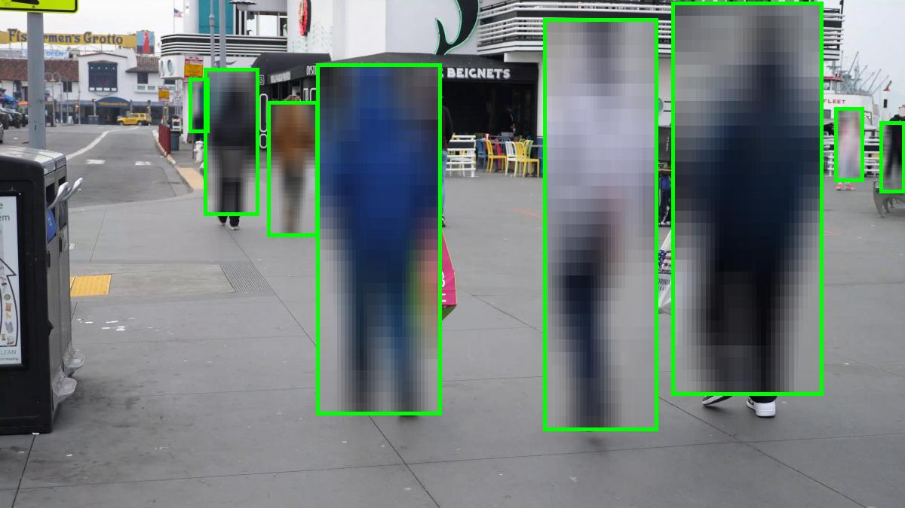

Object Detection
In this example, we use CVCUDA to accelerate the pre processing, post processing and rendering pipelines in the deep learning inference use case involving an object detection model. The deep learning model can utilize either Tensorflow or TensorRT to run the inference. The pre-processing pipeline converts the input into the format required by the input layer of the model whereas the post processing pipeline extracts and filters the bounding boxes and renders them on the frame. We use the Peoplenet Model from NVIDIA NGC to detect people, face and bags in the frame. This sample can work on a single image or a folder full of images or on a single video. All images have to be in the JPEG format and with the same dimensions unless run under the batch size of one. Video has to be in mp4 format with a fixed frame rate. We use the torchnvjpeg library to read the images and NVIDIA’s Video Processing Framework (VPF) to read/write videos.
The exact pre-processing operations are:
Decode Data -> Resize -> Convert Datatype(Float) -> Normalize (to 0-1 range) -> Convert to NCHW
The exact post-processing operations are:
Bounding box and score detections from the network -> Interpolate bounding boxes to the image size -> Filter the bounding boxes using NMS -> Render the bounding boxes -> Blur the ROI's
Writing the Sample App
The object detection app has been designed to be modular in all aspects. It imports and uses various modules such as data decoders, encoders, pipeline pre and post processors and the model inference. Some of these modules are defined in the same folder as the sample whereas the rest are defined in the common scripts folder for a wider re-use.
Modules used by this sample app that are defined in the common folder (i.e. not specific just to this sample) are the
ImageBatchDecoderandImageBatchEncoderfor nvImageCodec based image decoding and encoding andVideoBatchDecoderandVideoBatchEncoderfor PyNvVideoCodec based video decoding and encoding.Modules specific to this sample (i.e. defined in the object_detection sample folder) are
PreprocessorCvcudaandPostprocessorCvcudafor CVCUDA based pre and post processing pipelines andObjectDetectionTensorRTandObjectDetectionTensorflowfor the model inference.
The first stage in our pipeline is importing all necessary python modules. Apart from the modules described above, this also includes modules such as torch and torchvision, torchnvjpeg, vpf and the main package of CVCUDA among others. Be sure to import pycuda.driver before importing any other GPU packages like torch or cvcuda to ensure a proper initialization.
1# NOTE: One must import PyCuda driver first, before CVCUDA or VPF otherwise
2# things may throw unexpected errors.
3import pycuda.driver as cuda
4import os
5import sys
6import logging
7import cvcuda
8import torch
9
10# Bring the commons folder from the samples directory into our path so that
11# we can import modules from it.
12common_dir = os.path.join(
13 os.path.dirname(os.path.dirname(os.path.dirname(os.path.abspath(__file__)))),
14 "common",
15 "python",
16)
17sys.path.insert(0, common_dir)
18
19from perf_utils import ( # noqa: E402
20 CvCudaPerf,
21 get_default_arg_parser,
22 parse_validate_default_args,
23)
24
25from nvcodec_utils import ( # noqa: E402
26 VideoBatchDecoder,
27 VideoBatchEncoder,
28 ImageBatchDecoder,
29 ImageBatchEncoder,
30)
31
32from pipelines import ( # noqa: E402
33 PreprocessorCvcuda,
34 PostprocessorCvcuda,
35)
36
37from model_inference import ( # noqa: E402
38 ObjectDetectionTensorflow,
39 ObjectDetectionTensorRT,
40)
41
Then we define the main function which helps us parse various configuration parameters used throughout this sample as command line
arguments. This sample allows configuring following parameters. All of them have their default values already set so that one can execute the sample without supplying any. Some of these arguments are shared across many other CVCUDA samples and hence come from the perf_utils.py class’s get_default_arg_parser() method.
-i,--input_path: Either a path to a JPEG image/MP4 video or a directory containing JPG images to use as input. When pointing to a directory, only JPG images will be read.-o,--output_dir: The directory where the output object_detection overlay should be stored.-th,--target_img_height: The height to which you want to resize the input_image before running inference.-tw,--target_img_width: The width to which you want to resize the input_image before running inference.-b,--batch_size: The batch size used during inference. If only one image is used as input, the same input image will be read and used this many times. Useful for performance bench-marking.-d,--device_id: The GPU device to use for this sample.-c,--confidence_threshold: The confidence threshold for filtering out the detected bounding boxes.-iou,--iou_threshold: The Intersection over Union threshold for NMS.-bk,--backend: The inference backend to use. Currently supports Tensorflow or TensorRT.
Once we are done parsing all the command line arguments, we would setup the CvCudaPerf object for any performance benchmarking needs and simply call the function run_sample with all those arguments.
1cvcuda_perf = CvCudaPerf("object_detection_sample", default_args=args)
2run_sample(
3 args.input_path,
4 args.output_dir,
5 args.batch_size,
6 args.target_img_height,
7 args.target_img_width,
8 args.device_id,
9 args.backend,
10 args.confidence_threshold,
11 args.iou_threshold,
12 cvcuda_perf,
13)
The run_sample function is the primary function that runs this sample. It sets up the requested CUDA device, CUDA context and CUDA stream. CUDA streams help us execute CUDA operations on a non-default stream and enhances the overall performance. Additionally, NVTX markers are used throughout this sample (via CvCudaPerf) to facilitate performance bench-marking using NVIDIA NSIGHT systems and benchmark.py. In order to keep things simple, we are only creating one CUDA stream to run all the stages of this sample. The same stream is available in CVCUDA, PyTorch and TensorRT.
Once the streams have been defined and initialized, all the operations in the rest of this sample will be executed inside the stream.
1cvcuda_perf.push_range("run_sample")
2
3# Define the objects that handle the pipeline stages ---
4image_size = (target_img_width, target_img_height)
5
6# Define the cuda device, context and streams.
7cuda_device = cuda.Device(device_id)
8cuda_ctx = cuda_device.retain_primary_context()
9cuda_ctx.push()
10# Use the the default stream for cvcuda and torch
11# Since we never created a stream current will be the CUDA default stream
12cvcuda_stream = cvcuda.Stream().current
13torch_stream = torch.cuda.default_stream(device=cuda_device)
Next, we instantiate various classes to help us run the sample. These classes are:
PreprocessorCvcuda: A CVCUDA based pre-processing pipeline for object detection.ImageBatchDecoder: A nvImageCodec based image decoder to read the images.ImageBatchEncoder: A nvImageCodec based image encoder to write the images.VideoBatchDecoder: A PyNvVideoCodec based video decoder to read the video.VideoBatchEncoder: A PyNvVideoCodec based video encoder to write the video.PostProcessorCvcuda: A CVCUDA based post-processing pipeline for object detection.ObjectDetectionTensorflow: A TensorFlow based object detection model to execute inference.ObjectDetectionTensorRT: A TensorRT based object detection model to execute inference.
These classes are defined in modular fashion and exposes a uniform interface which allows easy plug-and-play in appropriate places. For example, one can use the same API to decode/encode images using PyTorch as that of decode/encode videos using VPF. Similarly, one can invoke the inference in the exact same way with TensorFlow as with TensorRT.
Additionally, the encoder and decoder interfaces also exposes start and join methods, making it easy to upgrade them to a multi-threading environment (if needed.) Such multi-threading capabilities are slated for a future release.
With all of these components initialized, the overall data flow per a data batch looks like the following:
Decode batch -> Preprocess Batch -> Run Inference -> Post Process Batch -> Encode batch
1# Define and execute the processing pipeline
2cvcuda_perf.push_range("pipeline")
3
4# Fire up encoder/decoder
5decoder.start()
6encoder.start()
7
8# Loop through all input frames
9batch_idx = 0
10while True:
11 cvcuda_perf.push_range("batch", batch_idx=batch_idx)
12
13 # Execute everything inside the streams.
14 with cvcuda_stream, torch.cuda.stream(torch_stream):
15 # Stage 1: decode
16 batch = decoder()
17 if batch is None:
18 cvcuda_perf.pop_range(total_items=0) # for batch
19 break # No more frames to decode
20 assert batch_idx == batch.batch_idx
21
22 logger.info("Processing batch %d" % batch_idx)
23
24 # docs_tag: start_preproc
25 # Stage 2: pre-processing
26 orig_tensor, resized_tensor, normalized_tensor = preprocess(
27 batch.data, image_size
28 )
29
30 # docs_tag: start_run_infer
31 # Stage 3: inference
32 bboxes, probabilities = inference(normalized_tensor)
33
34 # docs_tag: start_postprocess
35 # Stage 4: post-processing
36 out_tensor = postprocess(bboxes, probabilities, orig_tensor)
37
38 # docs_tag: start_encode
39 # Stage 5: encode
40 batch.data = out_tensor
41 encoder(batch)
42 batch_idx += 1
43
44 cvcuda_perf.pop_range(total_items=batch.data.shape[0]) # for batch
45
46# Make sure encoder finishes any outstanding work
47encoder.join()
48
49cvcuda_perf.pop_range() # for pipeline
50
51cuda_ctx.pop()
That’s it for the object detection sample. To understand more about how each stage in the pipeline works, please explore the following sections:
Running the Sample
The sample can be invoked without any command-line arguments like the following. In that case it will use the default values. It uses peoplenet.jpg as the input image, renders the bounding boxes and writes the image to /tmp directory with batch size of 1. The default confidence threshold is 0.9 and iou threshold is 0.1.
python3 object_detection/python/main.py
To run it on a specific image
python3 object_detection/python/main.py -i assets/images/tabby_tiger_cat.jpg
To run it a folder worth of images with with batch size 2
python3 object_detection/python/main.py -i assets/images -b 2
To run it a folder worth of images with with batch size 2 with the TensorFlow backend
python3 object_detection/python/main.py -i assets/images -b 2 -bk tensorflow
To run it on a video with batch size 4
python3 object_detection/python/main.py -i assets/videos/pexels-chiel-slotman-4423925-1920x1080-25fps.mp4 -b 4
Understanding the Output
This sample takes as input one or more images or one video and generates the object detection boxes with the regions inside the bounding box blurred. The IOU threshold for NMS and confidence threshold for the bounding boxes can be configured as a runtime parameter from the command line. Since this sample works on batches, sometimes the batch size and the number of images read may not be a perfect multiple. In such cases, the last batch may have a smaller batch size.
user@machine:~/cvcuda/samples$ python3 object_detection/python/main.py
[perf_utils:85] 2023-07-27 23:15:34 WARNING perf_utils is used without benchmark.py. Benchmarking mode is turned off.
[perf_utils:89] 2023-07-27 23:15:34 INFO Using CV-CUDA version: 0.6.0-beta
[pipelines:30] 2023-07-27 23:15:36 INFO Using CVCUDA as preprocessor.
[torch_utils:77] 2023-07-27 23:15:36 INFO Using torchnvjpeg as decoder.
[torch_utils:151] 2023-07-27 23:15:36 INFO Using PyTorch/PIL as encoder.
[pipelines:137] 2023-07-27 23:15:36 INFO Using CVCUDA as post-processor.
[model_inference:210] 2023-07-27 23:15:37 INFO Using TensorRT as the inference engine.
[object_detection:166] 2023-07-27 23:15:37 INFO Processing batch 0
[torch_utils:165] 2023-07-27 23:15:37 INFO Saving the overlay result to: /tmp/out_peoplenet.jpg
[torch_utils:165] 2023-07-27 23:15:37 INFO Saving the overlay result to: /tmp/out_peoplenet.jpg
[torch_utils:165] 2023-07-27 23:15:37 INFO Saving the overlay result to: /tmp/out_peoplenet.jpg
[torch_utils:165] 2023-07-27 23:15:37 INFO Saving the overlay result to: /tmp/out_peoplenet.jpg
Input Image
{kind=link}
Output Image
{kind=link}